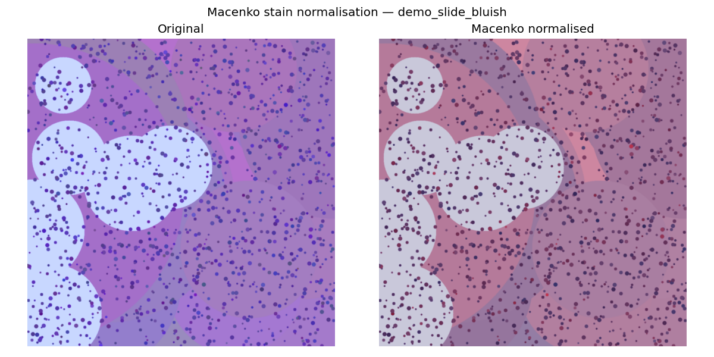

Classification of Malignant Melanoma in Canines — CATCH dataset
The Foundation phase is on schedule. The computational environment is fully configured, the literature review has been refined, and the data acquisition and preprocessing pipeline (Macenko stain normalisation → patch extraction → stratified split) has been implemented and validated end-to-end. The pipeline was verified on synthetic H&E slides while the CATCH dataset download from TCIA is being finalised; it is ready to run unchanged on the real slides.
| Gantt task | Planned weeks | Status | Evidence |
|---|---|---|---|
| Environment Setup & Framework | W1 | ✓ Complete | .venv, requirements.txt, requirements-lock.txt, setup_env.* |
| Literature Review & Refinement | W1–W2 | ✓ Complete | docs/literature/literature_review_notes.md |
| Data Acquisition & Preprocessing | W1–W3 | 🔄 In progress (~60%) | code + QA/split reports + figures |
.venv) so project packages never affect other projects or the global interpreter.requirements.txt, environment.yml, pinned requirements-lock.txt, and one-command installers (setup_env.ps1 / .sh).src/ package structure.docs/literature/literature_review_notes.md.Implemented and validated the complete preprocessing chain:
download_catch.py) — documents the TCIA / NBIA Data Retriever workflow and verifies downloaded slides.quality_check.py) — per-slide checks for size, blur (variance of Laplacian), brightness and tissue fraction; flags/excludes poor slides with a reason.stain_normalization.py) — maps slides onto a common H&E colour appearance to remove scanner/lab variation.patch_extraction.py) — tiles slides into 256×256 patches, keeping only tissue-bearing tiles (≥50% tissue).dataset_split.py) — 70/15/15 train/val/test split preserving class distribution.2 slides → both passed QA → 26 tissue patches extracted → split 18/4/4. Confirms the pipeline runs end-to-end and is ready for the real CATCH slides.
| Artefact | Location |
|---|---|
| Before/after stain normalisation figures | outputs/figures/stain_normalization_*.png |
| Sample extracted patches (grids) | outputs/figures/patches_*.png |
| Quality assessment report | outputs/logs/quality_report.csv |
| Train/val/test split summary | outputs/logs/split_summary.json |
| Source code (modular package) | src/ |

| Risk | Status | Mitigation in place |
|---|---|---|
| CATCH download (TCIA account / large files) | Active | Pipeline validated on synthetic data; runs unchanged on real slides once downloaded. NBIA Data Retriever workflow documented. |
| GPU resources for upcoming training | Watching | Google Colab Pro + university HPC identified as fallback. |
| Class imbalance across tumour subtypes | Anticipated | Stratified split implemented; class-weighted loss + augmentation planned for Week 3+. |